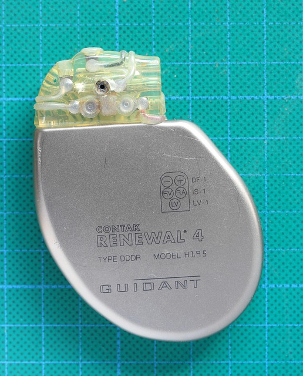
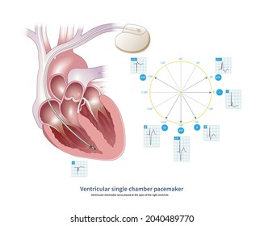
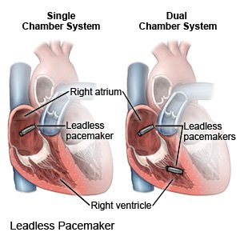
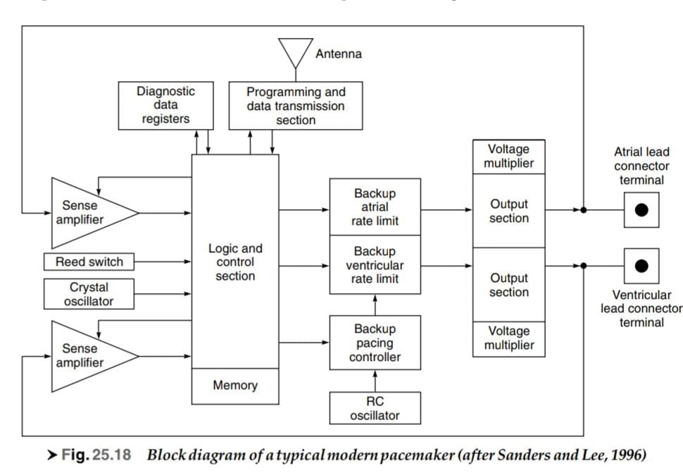
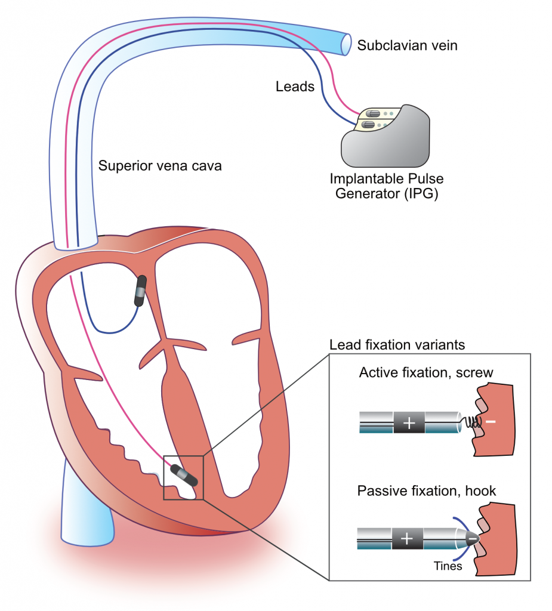
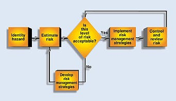
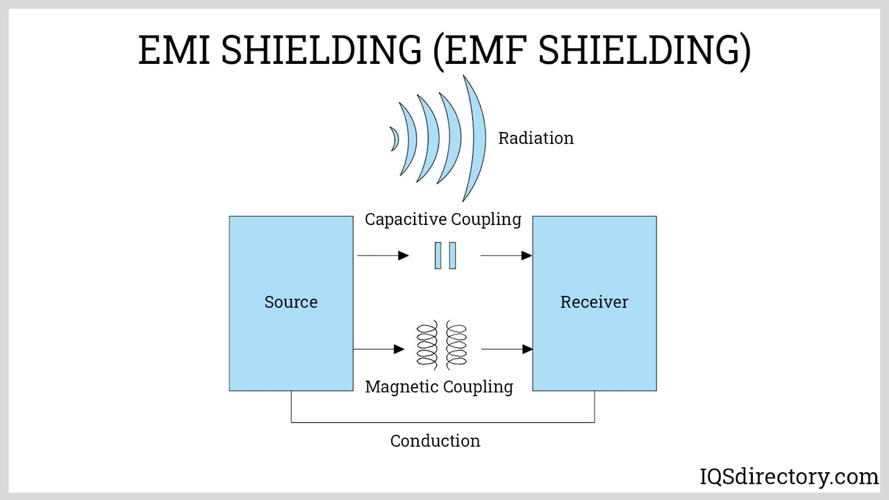

A Comprehensive Investigation of Pacemaker Technology, Safety, and Regulation
Cardiac pacemakers are sophisticated medical devices designed to regulate the heartbeat in patients with cardiac rhythm disorders. These life-saving devices have evolved significantly since their inception in the 1950s, becoming smaller, more reliable, and incorporating advanced features that improve patient outcomes and quality of life.
This portfolio explores the evolution of pacemaker technology, focusing on two major types: single-chamber and dual-chamber pacemakers. It also investigates the critical aspects of electrical safety in pacemaker use, the regulatory standards that govern their manufacture and implementation, and the rigorous testing procedures that ensure their safe operation.

Figure 1: A modern cardiac pacemaker device (Illustrative)
Dr. Paul Zoll develops the first external pacemaker. Bulky and painful, it delivered electrical pulses through the chest wall.
First implantable pacemaker by Rune Elmqvist and Åke Senning in Sweden. It lasted only a few hours.
Introduction of transvenous leads, eliminating the need for thoracotomy. Development of demand pacemakers that only fired when needed.
Introduction of lithium-iodide batteries, significantly extending device longevity. Development of programmable pacemakers.
Dual-chamber pacing becomes mainstream. Introduction of rate-responsive pacemakers that could adjust to patient activity levels.
Development of biventricular pacing for heart failure. Introduction of MRI-compatible pacemakers and remote monitoring capabilities.
Leadless pacemakers approved for clinical use. Development of wireless charging technology and advanced algorithms for pacing optimization.
Single-chamber pacemakers use one lead, typically placed in the right ventricle, to sense and pace a single chamber of the heart. These devices are simpler in design and programming compared to more complex systems.

Figure 2: Schematic representation of a single-chamber pacemaker system
Dual-chamber pacemakers use two leads: one positioned in the right atrium and another in the right ventricle. This configuration allows the device to coordinate the timing between atrial and ventricular contractions, more closely mimicking the heart's natural electrical conduction system.

Figure 3: Schematic representation of a dual-chamber pacemaker system

Figure 4: Block diagram showing the major components and signal flow in a modern cardiac pacemaker
The block diagram illustrates the key components of a modern pacemaker:
Modern pacemakers also incorporate additional features such as rate-response sensors, diagnostic data collection, and wireless communication capabilities for remote monitoring.
Electrical safety is a critical concern in pacemaker design and implementation. These devices must operate reliably in various electromagnetic environments while maintaining patient safety.
| Hazard Type | Description | Safety Measures |
|---|---|---|
| Electromagnetic Interference (EMI) | External electromagnetic fields can disrupt pacemaker function or induce currents in the leads | EMI shielding, filtered inputs, programmed responses to detected interference |
| Electrical Leakage | Unintended current paths that could deliver shocks or damage tissue | Hermetic sealing, insulation integrity testing, biocompatible materials |
| Power Surges | Excessive voltage that could damage the device or harm tissue | Surge protection circuits, current limiting, isolation barriers |
| Battery Failure | Sudden loss of power or battery leakage | Battery chemistry selection, elective replacement indicators, redundant power systems |
| Software Malfunction | Programming errors that could lead to inappropriate pacing | Redundant processing, watchdog timers, fail-safe modes |
Modern pacemakers employ multiple layers of protection to ensure electrical safety:

Figure 5: Electrical isolation and protection layers in a modern pacemaker
Patients with pacemakers may encounter various sources of electromagnetic interference in daily life. Understanding these sources and implementing appropriate precautions is essential for safe device operation.
| EMI Source | Potential Impact | Mitigation Strategies |
|---|---|---|
| Mobile Phones | Temporary sensing issues if held directly over device | Keep phone >15cm from device, use opposite ear |
| Medical Procedures (MRI, Electrocautery) | Reprogramming, heating of leads, device damage | Use MRI-conditional devices, temporary reprogramming before procedures |
| Security Systems | Temporary interference during passage through gates | Walk through at normal pace, avoid lingering near systems |
| High-Voltage Equipment | Potential for inhibition or asynchronous pacing | Maintain safe distances from industrial equipment, power transformers |
| Household Appliances | Minimal risk with modern devices | Normal use of properly maintained appliances is generally safe |
Cardiac pacemakers are classified as Class III medical devices in most regulatory frameworks, indicating their life-sustaining purpose and the high risk associated with their failure. As such, they are subject to the most stringent regulatory controls.
| Regulatory Body | Region | Key Standards/Requirements |
|---|---|---|
| Food and Drug Administration (FDA) | United States | Premarket Approval (PMA), Quality System Regulation (21 CFR 820), Post-market surveillance |
| European Medicines Agency (EMA) | European Union | Medical Device Regulation (MDR), CE Mark certification, Clinical evaluation requirements |
| Pharmaceuticals and Medical Devices Agency (PMDA) | Japan | Pharmaceutical and Medical Device Act, JPAL approval process |
| Therapeutic Goods Administration (TGA) | Australia | Australian Register of Therapeutic Goods (ARTG) inclusion, conformity assessment |
| Health Canada | Canada | Medical Device License, ISO 13485 compliance |
Several international standards specifically address the design, testing, and performance requirements of cardiac pacemakers:
The regulatory framework for pacemakers places significant emphasis on risk management throughout the device lifecycle:

Figure 6: Risk management process for cardiac pacemakers according to ISO 14971
The risk management process includes:
Comprehensive testing is essential to ensure the safety and effectiveness of cardiac pacemakers before they reach patients. The testing regime must address electrical safety, mechanical reliability, software performance, and biocompatibility.
| Test Type | Purpose | Test Parameters |
|---|---|---|
| Leakage Current Testing | Verify that leakage currents remain below safe thresholds | Maximum allowable leakage: 10 μA (patient circuit) |
| Dielectric Strength Testing | Ensure insulation can withstand voltage stress | Typically 1000V AC plus twice working voltage |
| EMI/EMC Testing | Verify proper operation in presence of electromagnetic fields | Per AAMI PC69 and IEC 60601-1-2 |
| ESD Testing | Ensure device withstands electrostatic discharge | 8kV contact discharge, 15kV air discharge |
| Output Pulse Characterization | Verify that stimulation pulses meet specifications | Amplitude accuracy ±10%, pulse width accuracy ±5% |

Figure 7: Schematic of EMI/EMC testing setup for cardiac pacemakers
Pacemakers must withstand a variety of mechanical stresses and environmental conditions throughout their operational life:
Modern pacemakers rely heavily on embedded software for their operation. Software validation includes:
Software development and validation for pacemakers follow the principles outlined in IEC 62304 (Medical device software - Software life cycle processes) and FDA guidance on software validation.
Materials used in pacemakers must be biocompatible to prevent adverse tissue reactions:
| Test Category | Tests Included | Standards |
|---|---|---|
| Cytotoxicity | In vitro testing with cell cultures | ISO 10993-5 |
| Sensitization | Tests for allergic reactions | ISO 10993-10 |
| Irritation | Tests for tissue irritation | ISO 10993-10 |
| Systemic Toxicity | Tests for acute toxicity, subchronic toxicity | ISO 10993-11 |
| Genotoxicity | Tests for damage to genetic material | ISO 10993-3 |
| Implantation | Long-term implantation studies | ISO 10993-6 |
Before market approval, pacemakers undergo clinical trials to validate their safety and efficacy in human subjects:
Clinical validation must follow Good Clinical Practice (GCP) guidelines and receive approval from ethics committees and regulatory authorities.
Cardiac pacemakers represent a remarkable achievement in medical technology, having evolved from bulky external devices to sophisticated implantable systems that adapt to patients' physiological needs. The development of single-chamber and dual-chamber pacemakers has provided physicians with options to address specific cardiac arrhythmias while minimizing potential complications.
Electrical safety remains a paramount concern in pacemaker design and use. The implementation of multiple protection mechanisms and adherence to stringent safety standards has significantly reduced the risks associated with these devices. However, patients and healthcare providers must remain vigilant about potential sources of electromagnetic interference and follow established precautions.
The regulatory framework governing pacemakers continues to evolve, with increasing emphasis on post-market surveillance and real-world performance data. Manufacturers must navigate complex regulatory requirements across different jurisdictions while maintaining the highest standards of quality and safety.
Comprehensive testing and validation procedures, covering electrical safety, mechanical reliability, software performance, and biocompatibility, are essential to ensure that pacemakers operate safely and effectively throughout their intended service life.
As technology continues to advance, we can anticipate further improvements in pacemaker design, including longer battery life, enhanced diagnostic capabilities, MRI compatibility for all devices, and more sophisticated algorithms for optimizing cardiac function. The evolution of leadless pacemakers and wireless charging technologies may eventually eliminate the need for transvenous leads, reducing one of the main sources of complications in current systems.